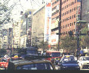

呂清夫 撰文

有人說，三代有錢懂得吃，四代有錢懂得穿。我不知道，幾代有錢才懂得住，不過，看看整個台北的都市空間，總覺得我們的都市實在不美。台北街頭的景觀，說實在的，比南美的都市還不如，所以誇耀外匯存底多少，國民收入多高，都掩飾不了文化的貧窮，當我們看到人家的城市綠意盎然，噴泉飛揚，廣場壯闊之時，總不由得興起「為何不能」之嘆。難怪文建會的主委都出來講了話，說我們的都市建築之間很不諧調。台北市政府更有意禮聘貝聿銘來美化車站附近，可惜遭了婉拒，其實政府如果有心要做，也未必找貝聿銘，因為當代像他這種有名的外國建築師大多了，要請國人來設計，不要限於華裔，華裔也是外國人,如此一來，天地可就寬了，可以精挑細選。因之，巴黎龐畢度文化中心精挑的設計者可以義大利人皮亞諾，東京文化會館細選的建築師可以是法國人柯比瑞。這個柯比瑞（Le Corbusier）不但做過巴黎市改造計畫，而且還替巴塞隆納、巴西、阿爾及爾各地進行都市計畫，像這一類人才，難道我們不可加以考慮嗎？但願一個貝聿銘婉拒了設計，政府還能找其他人設計。希望我們是因事找人，而非因人設事才好。台北街頭不僅建築物亂七八糟，更亂的是橫七豎八的招牌，這些招牌往往一個比一個大，一個比一個高，一個比一個顏色刺眼，甚至一個比一個危險，看在行人眼中，真有如高分貝的噪音，吾人無以名之，姑稱之為噪色或噪形，外加污濁的空氣、紊亂的交通，益加使人焦躁難安、呼吸急促。這些招牌為廣招徠，常如袖子一般，從建築物上長了出來，使原來侷促的都市空間更形縮小。這種袖子式的招牌在台灣、香港等華人世界似乎特別多，其實你也伸出袖子，我也伸出袖子，不是大家都被遮起來了嗎？不如大家都收起袖子，讓都市空間清爽一點。說起來，在歐洲很少看到這種袖子式的大招牌，他們有店招都是貼在建築牆上的，而且通常只限於一樓的牆面，所以一切顯得井然有序，偶爾有袖子式的招牌也是袖珍的，而且是別出心裁的。另外，他們的住家不但沒有鐵窗，而且沒有圍牆，所以便無亂貼廣告之虞。據說台北市政府規定招牌只能掛在四樓以下，其實這個標準還可以嚴格一點，以讓大家把廣告掛得低一點、雅一點，這樣對大家都好，行人固然比較安全、舒爽，商家也可以少受遮掩，不要大家都想把別人遮掉，那麼誰也出不了頭。而更重要的是我們的大環境，總要弄得有點像人住的地方，不要到處看到的都是生意眼。連公園綠地都是生意眼覬覦的對象。當一個都市毫無賞心悅目之處，那麼都市除了是討生活的地方以外，還有什麼呢？現在台北固然難與巴黎、柏林去比，即連第三世正界的布宜諾斯艾利斯、巴西利亞等地也是比不上了，因為它們雖窮，卻擁有壯麗的廣場、迷人的噴泉、世界級的建築……，而我們呢？
原載1989.6.6.自立早報，收入1994年，呂清夫著「現代都市叢林派」